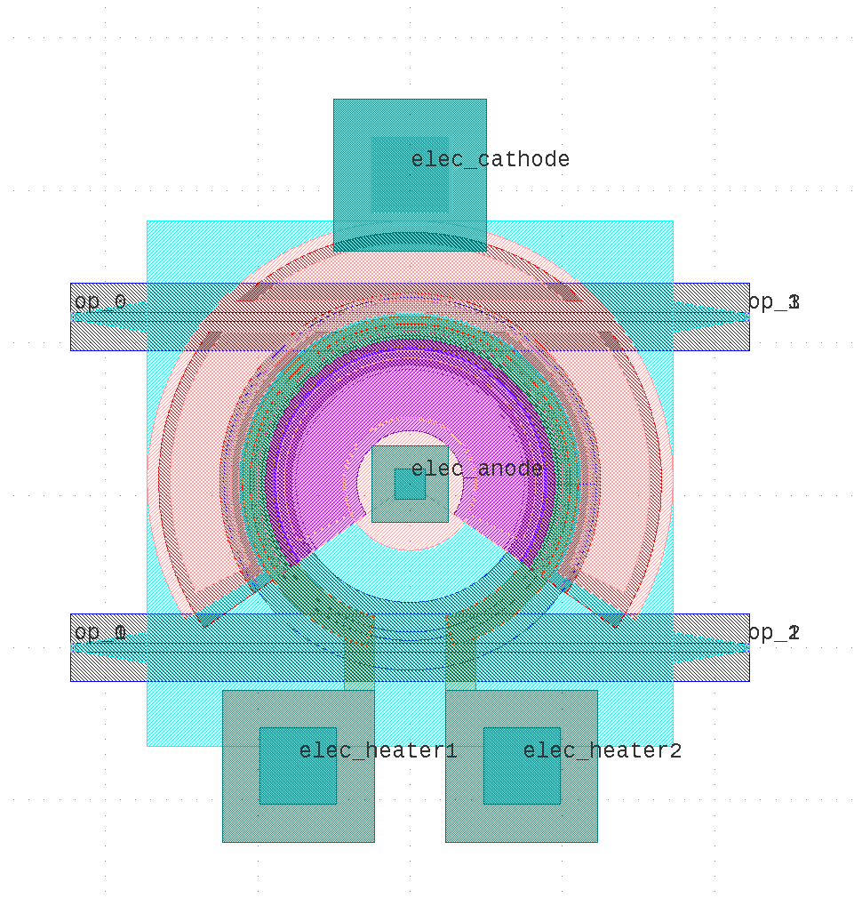

Module gpdk.components.ring_modulator.ring_modulator
Expand source code
import math
from dataclasses import dataclass
from typing import Tuple
from fnpcell import all as fp
from gpdk.components.ring_filter.ring_filter import RingFilter
from gpdk.technology import WG, get_technology
@fp.pcell_class()
@dataclass(eq=False)
class RingModulator(fp.PCell):
"""
Attributes:
gap_monitor: defaults to 0.4
gap: defaults to 0.2
ring_radius: defaults to 10
waveguide_type: type of waveguide
ring_filter: instance of `RingFilter`, port_count=4, pin_count=2, required=False
port_names: defaults to ["op_0", "op_1", "op_2", "op_3", "ep_0", "ep_1", "ep_2", "ep_3"]
Examples:
```python
TECH = get_technology()
ring = RingModulator(waveguide_type=TECH.WG.FWG.C.WIRE)
fp.plot(ring)
```

"""
gap_monitor: float = fp.PositiveFloatParam(default=0.4).as_field()
gap: float = fp.PositiveFloatParam(default=0.2).as_field()
ring_radius: float = fp.PositiveFloatParam(default=10).as_field()
waveguide_type: WG.FWG.C = fp.WaveguideTypeParam(type=WG.FWG.C).as_field()
ring_filter: fp.IDevice = fp.DeviceParam(type=RingFilter, port_count=4, pin_count=2, required=False).as_field()
port_names: fp.IPortOptions = fp.PortOptionsParam(count=8, default=["op_0", "op_1", "op_2", "op_3", "ep_0", "ep_1", "ep_2", "ep_3"]).as_field()
def _default_waveguide_type(self):
return get_technology().WG.FWG.C.WIRE
def _default_ring_filter(self):
return RingFilter(
ring_radius=self.ring_radius,
gap=self.gap,
gap_monitor=self.gap_monitor,
waveguide_type=self.waveguide_type,
)
def build(self) -> Tuple[fp.InstanceSet, fp.ElementSet, fp.PortSet]:
insts, elems, ports = super().build()
TECH = get_technology()
LAYER = TECH.LAYER
gap_monitor = self.gap_monitor
gap = self.gap
ring_radius = self.ring_radius
waveguide_type = self.waveguide_type
ring_filter = self.ring_filter
port_names = self.port_names
n_width = 2.0
n_enc = -1.0
p_enc = 1.0
np_enc = -1.5
pp_enc = 1.5
npp_width = 5.5
npp_enc = -3.75
ppp_enc = 3.75
vc_width = 4.0
vc_enc = 3.75
m1_width = 6.0
m1_enc = 4.25
vl_enc = 1.5
vl_min_width = 2
via_height = 5
via_width = 5
min_doping_degrees = -35.0
max_doping_degrees = 215.0
vc_offset_degrees = 8.0
m1_offset_degrees = 4.0
w_m1_out = m1_width
r_m1_out = ring_radius + m1_enc
rn = ring_radius + n_enc
rp = ring_radius + p_enc
rnp = ring_radius + np_enc
rpp = ring_radius + pp_enc
rnpp = ring_radius + npp_enc
rppp = ring_radius + ppp_enc
r_vc1 = ring_radius - vc_enc
r_vc2 = ring_radius + vc_enc
core_width = waveguide_type.core_width
x0 = 0
y0 = ring_radius + gap + core_width
y_offset = ring_radius * 2 + gap + gap_monitor + core_width * 2
# variables of VL Layer
r_vl = r_vc1 - vc_width / 2 - vl_enc
if r_vl < vl_min_width:
r_vl = vl_min_width
vc_width = ring_radius - 1.75 - r_vl - 2.01
r_vc1 = ring_radius - 1.75 - vc_width / 2
r_vc2 = ring_radius + 1.75 + vc_width / 2
npp_width = (ring_radius - core_width / 2 - 0.75) - (r_vc1 - vc_width / 2 - 0.75)
rnpp = ((ring_radius - core_width / 2.0 - 0.75) + (r_vc1 - vc_width / 2.0 - 0.75)) / 2.0
rppp = 2 * ring_radius - rnpp
else:
r_vl = vl_min_width
# N Layer
n_arc = fp.el.EllipticalArc(
radius=rn, initial_degrees=min_doping_degrees, final_degrees=max_doping_degrees, origin=(x0, y0), stroke_width=n_width, layer=LAYER.N_DRW
)
elems += n_arc
# P Layer
p_arc = fp.el.EllipticalArc(
radius=rp, initial_degrees=min_doping_degrees, final_degrees=max_doping_degrees, origin=(x0, y0), stroke_width=n_width, layer=LAYER.P_DRW
)
elems += p_arc
# NP Layer
np_arc = fp.el.EllipticalArc(
radius=rnp, initial_degrees=min_doping_degrees, final_degrees=max_doping_degrees, origin=(x0, y0), stroke_width=n_width, layer=LAYER.NP_DRW
)
elems += np_arc
# PP Layer
pp_arc = fp.el.EllipticalArc(
radius=rpp, initial_degrees=min_doping_degrees, final_degrees=max_doping_degrees, origin=(x0, y0), stroke_width=n_width, layer=LAYER.PP_DRW
)
elems += pp_arc
# NPP Layer
npp_arc = fp.el.EllipticalArc(
radius=rnpp, initial_degrees=min_doping_degrees, final_degrees=max_doping_degrees, origin=(x0, y0), stroke_width=npp_width, layer=LAYER.NPP_DRW
)
elems += npp_arc
# PPP Layer
ppp_arc = fp.el.EllipticalArc(
radius=rppp, initial_degrees=min_doping_degrees, final_degrees=max_doping_degrees, origin=(x0, y0), stroke_width=npp_width, layer=LAYER.PPP_DRW
)
ppp_rect = fp.el.Rect(width=2 * rppp + npp_width, height=core_width + 1.5, center=(0, y_offset), layer=LAYER.PPP_DRW)
ppp_arc_destroy_ppp_rect = ppp_arc - ppp_rect
elems += ppp_arc_destroy_ppp_rect
# CONT_DRW Layer
min_vc_degrees = min_doping_degrees + vc_offset_degrees
max_vc_degrees = max_doping_degrees - vc_offset_degrees
vc_arc1 = fp.el.EllipticalArc(
radius=r_vc1, initial_degrees=min_vc_degrees, final_degrees=max_vc_degrees, origin=(x0, y0), stroke_width=vc_width, layer=LAYER.CONT_DRW
)
elems += vc_arc1
vc_arc2 = fp.el.EllipticalArc(
radius=r_vc2, initial_degrees=min_vc_degrees, final_degrees=max_vc_degrees, origin=(x0, y0), stroke_width=vc_width, layer=LAYER.CONT_DRW
)
vc_rect = fp.el.Rect(width=2 * r_vc2 + vc_width, height=core_width + 1.5, center=(x0, y_offset), layer=LAYER.CONT_DRW)
vc_arc_destroy_vc_rect = vc_arc2 - vc_rect
elems += vc_arc_destroy_vc_rect
# M1 Layer
w_m1_in = r_vc1 + vc_width / 2 + 0.5
r_m1_in = (r_vc1 + vc_width / 2.0 + 0.5) / 2.0
min_m1_degrees = min_vc_degrees - m1_offset_degrees
max_m1_degrees = max_vc_degrees + m1_offset_degrees
m1_arc_in = fp.el.EllipticalArc(
radius=r_m1_in, initial_degrees=min_doping_degrees, final_degrees=max_doping_degrees, origin=(x0, y0), stroke_width=w_m1_in, layer=LAYER.M1_DRW
)
elems += m1_arc_in
m1_arc_out = fp.el.EllipticalArc(
radius=r_m1_out, initial_degrees=min_m1_degrees, final_degrees=max_m1_degrees, origin=(x0, y0), stroke_width=w_m1_out, layer=LAYER.M1_DRW
)
elems += m1_arc_out
m1_ring = fp.el.EllipticalRing(outer_radius=r_m1_in, origin=(x0, y0), layer=LAYER.M1_DRW)
elems += m1_ring
m1_rect = fp.el.Rect(width=via_width * 2, height=via_height * 2, center=(x0, y0 + r_m1_out + w_m1_out), layer=LAYER.M1_DRW)
elems += m1_rect
# VIA1 Layer
vl_rect1 = fp.el.Rect(width=r_vl, height=r_vl, center=(x0, y0), layer=LAYER.VIA1_DRW)
elems += vl_rect1
vl_rect2 = fp.el.Rect(width=via_width, height=via_height, center=(x0, y0 + r_vc2 + vc_width / 2 + 2 + via_height / 2), layer=LAYER.VIA1_DRW)
elems += vl_rect2
# M2 Layer
ml_rect1 = fp.el.Rect(width=via_width * 2, height=via_height * 2, center=(x0, y0 + r_m1_out + w_m1_out), layer=LAYER.M2_DRW)
elems += ml_rect1
ml_rect2 = fp.el.Rect(width=r_vl + vl_enc * 2, height=r_vl + vl_enc * 2, center=(x0, y0), layer=LAYER.M2_DRW)
elems += ml_rect2
# VIA2 Layer
vl_rect1 = fp.el.Rect(width=r_vl, height=r_vl, center=(x0, y0), layer=LAYER.VIA2_DRW)
elems += vl_rect1
vl_rect2 = fp.el.Rect(width=via_width, height=via_height, center=(x0, y0 + r_vc2 + vc_width / 2 + 2 + via_height / 2), layer=LAYER.VIA2_DRW)
elems += vl_rect2
# MT Layer
ml_rect1 = fp.el.Rect(width=via_width * 2, height=via_height * 2, center=(x0, y0 + r_m1_out + w_m1_out), layer=LAYER.MT_DRW)
elems += ml_rect1
ml_rect2 = fp.el.Rect(width=r_vl + vl_enc * 2, height=r_vl + vl_enc * 2, center=(x0, y0), layer=LAYER.MT_DRW)
elems += ml_rect2
ring_filter = ring_filter.with_ports(port_names[0:6])
insts += ring_filter
ports += ring_filter.ports
ports += fp.Pin(name=port_names[6], position=(x0, y0), orientation=-math.pi / 2, shape=vl_rect1.shape, metal_line_type=TECH.METAL.MT.W20)
ports += fp.Pin(
name=port_names[7],
position=(x0, y0 + r_vc2 + vc_width / 2 + 2 + via_height / 2),
orientation=math.pi / 2,
shape=m1_rect.shape,
metal_line_type=TECH.METAL.MT.W20,
)
return insts, elems, ports
if __name__ == "__main__":
from pathlib import Path
gds_file = Path(__file__).parent / "local" / Path(__file__).with_suffix(".gds").name
library = fp.Library()
TECH = get_technology()
# =============================================================
# fmt: off
library += RingModulator()
# fmt: on
# =============================================================
fp.export_gds(library, file=gds_file)
# fp.plot(library)Classes
class RingModulator (name: str = None, bands: Optional[FrozenSet[fnpcell.interfaces.IBand]] = None, patches: Tuple[fnpcell.interfaces.IElement, ...] = (), port_names: Sequence[Union[None, str, fnpcell.interfaces.Hidden]] = ('op_0', 'op_1', 'op_2', 'op_3', 'ep_0', 'ep_1', 'ep_2', 'ep_3'), transform: fnpcell.transform.Affine2D = None, gap_monitor: float = 0.4, gap: float = 0.2, ring_radius: float = 10, waveguide_type: gpdk.technology.wg.WG.FWG.C = None, ring_filter: fnpcell.interfaces.ICellRef = None)-
Attributes
gap_monitor- defaults to 0.4
gap- defaults to 0.2
ring_radius- defaults to 10
waveguide_type- type of waveguide
ring_filter- instance of
RingFilter, port_count=4, pin_count=2, required=False port_names- defaults to ["op_0", "op_1", "op_2", "op_3", "ep_0", "ep_1", "ep_2", "ep_3"]
Examples:
TECH = get_technology() ring = RingModulator(waveguide_type=TECH.WG.FWG.C.WIRE) fp.plot(ring)
Expand source code
class RingModulator(fp.PCell): """ Attributes: gap_monitor: defaults to 0.4 gap: defaults to 0.2 ring_radius: defaults to 10 waveguide_type: type of waveguide ring_filter: instance of `RingFilter`, port_count=4, pin_count=2, required=False port_names: defaults to ["op_0", "op_1", "op_2", "op_3", "ep_0", "ep_1", "ep_2", "ep_3"] Examples: ```python TECH = get_technology() ring = RingModulator(waveguide_type=TECH.WG.FWG.C.WIRE) fp.plot(ring) ```  """ gap_monitor: float = fp.PositiveFloatParam(default=0.4).as_field() gap: float = fp.PositiveFloatParam(default=0.2).as_field() ring_radius: float = fp.PositiveFloatParam(default=10).as_field() waveguide_type: WG.FWG.C = fp.WaveguideTypeParam(type=WG.FWG.C).as_field() ring_filter: fp.IDevice = fp.DeviceParam(type=RingFilter, port_count=4, pin_count=2, required=False).as_field() port_names: fp.IPortOptions = fp.PortOptionsParam(count=8, default=["op_0", "op_1", "op_2", "op_3", "ep_0", "ep_1", "ep_2", "ep_3"]).as_field() def _default_waveguide_type(self): return get_technology().WG.FWG.C.WIRE def _default_ring_filter(self): return RingFilter( ring_radius=self.ring_radius, gap=self.gap, gap_monitor=self.gap_monitor, waveguide_type=self.waveguide_type, ) def build(self) -> Tuple[fp.InstanceSet, fp.ElementSet, fp.PortSet]: insts, elems, ports = super().build() TECH = get_technology() LAYER = TECH.LAYER gap_monitor = self.gap_monitor gap = self.gap ring_radius = self.ring_radius waveguide_type = self.waveguide_type ring_filter = self.ring_filter port_names = self.port_names n_width = 2.0 n_enc = -1.0 p_enc = 1.0 np_enc = -1.5 pp_enc = 1.5 npp_width = 5.5 npp_enc = -3.75 ppp_enc = 3.75 vc_width = 4.0 vc_enc = 3.75 m1_width = 6.0 m1_enc = 4.25 vl_enc = 1.5 vl_min_width = 2 via_height = 5 via_width = 5 min_doping_degrees = -35.0 max_doping_degrees = 215.0 vc_offset_degrees = 8.0 m1_offset_degrees = 4.0 w_m1_out = m1_width r_m1_out = ring_radius + m1_enc rn = ring_radius + n_enc rp = ring_radius + p_enc rnp = ring_radius + np_enc rpp = ring_radius + pp_enc rnpp = ring_radius + npp_enc rppp = ring_radius + ppp_enc r_vc1 = ring_radius - vc_enc r_vc2 = ring_radius + vc_enc core_width = waveguide_type.core_width x0 = 0 y0 = ring_radius + gap + core_width y_offset = ring_radius * 2 + gap + gap_monitor + core_width * 2 # variables of VL Layer r_vl = r_vc1 - vc_width / 2 - vl_enc if r_vl < vl_min_width: r_vl = vl_min_width vc_width = ring_radius - 1.75 - r_vl - 2.01 r_vc1 = ring_radius - 1.75 - vc_width / 2 r_vc2 = ring_radius + 1.75 + vc_width / 2 npp_width = (ring_radius - core_width / 2 - 0.75) - (r_vc1 - vc_width / 2 - 0.75) rnpp = ((ring_radius - core_width / 2.0 - 0.75) + (r_vc1 - vc_width / 2.0 - 0.75)) / 2.0 rppp = 2 * ring_radius - rnpp else: r_vl = vl_min_width # N Layer n_arc = fp.el.EllipticalArc( radius=rn, initial_degrees=min_doping_degrees, final_degrees=max_doping_degrees, origin=(x0, y0), stroke_width=n_width, layer=LAYER.N_DRW ) elems += n_arc # P Layer p_arc = fp.el.EllipticalArc( radius=rp, initial_degrees=min_doping_degrees, final_degrees=max_doping_degrees, origin=(x0, y0), stroke_width=n_width, layer=LAYER.P_DRW ) elems += p_arc # NP Layer np_arc = fp.el.EllipticalArc( radius=rnp, initial_degrees=min_doping_degrees, final_degrees=max_doping_degrees, origin=(x0, y0), stroke_width=n_width, layer=LAYER.NP_DRW ) elems += np_arc # PP Layer pp_arc = fp.el.EllipticalArc( radius=rpp, initial_degrees=min_doping_degrees, final_degrees=max_doping_degrees, origin=(x0, y0), stroke_width=n_width, layer=LAYER.PP_DRW ) elems += pp_arc # NPP Layer npp_arc = fp.el.EllipticalArc( radius=rnpp, initial_degrees=min_doping_degrees, final_degrees=max_doping_degrees, origin=(x0, y0), stroke_width=npp_width, layer=LAYER.NPP_DRW ) elems += npp_arc # PPP Layer ppp_arc = fp.el.EllipticalArc( radius=rppp, initial_degrees=min_doping_degrees, final_degrees=max_doping_degrees, origin=(x0, y0), stroke_width=npp_width, layer=LAYER.PPP_DRW ) ppp_rect = fp.el.Rect(width=2 * rppp + npp_width, height=core_width + 1.5, center=(0, y_offset), layer=LAYER.PPP_DRW) ppp_arc_destroy_ppp_rect = ppp_arc - ppp_rect elems += ppp_arc_destroy_ppp_rect # CONT_DRW Layer min_vc_degrees = min_doping_degrees + vc_offset_degrees max_vc_degrees = max_doping_degrees - vc_offset_degrees vc_arc1 = fp.el.EllipticalArc( radius=r_vc1, initial_degrees=min_vc_degrees, final_degrees=max_vc_degrees, origin=(x0, y0), stroke_width=vc_width, layer=LAYER.CONT_DRW ) elems += vc_arc1 vc_arc2 = fp.el.EllipticalArc( radius=r_vc2, initial_degrees=min_vc_degrees, final_degrees=max_vc_degrees, origin=(x0, y0), stroke_width=vc_width, layer=LAYER.CONT_DRW ) vc_rect = fp.el.Rect(width=2 * r_vc2 + vc_width, height=core_width + 1.5, center=(x0, y_offset), layer=LAYER.CONT_DRW) vc_arc_destroy_vc_rect = vc_arc2 - vc_rect elems += vc_arc_destroy_vc_rect # M1 Layer w_m1_in = r_vc1 + vc_width / 2 + 0.5 r_m1_in = (r_vc1 + vc_width / 2.0 + 0.5) / 2.0 min_m1_degrees = min_vc_degrees - m1_offset_degrees max_m1_degrees = max_vc_degrees + m1_offset_degrees m1_arc_in = fp.el.EllipticalArc( radius=r_m1_in, initial_degrees=min_doping_degrees, final_degrees=max_doping_degrees, origin=(x0, y0), stroke_width=w_m1_in, layer=LAYER.M1_DRW ) elems += m1_arc_in m1_arc_out = fp.el.EllipticalArc( radius=r_m1_out, initial_degrees=min_m1_degrees, final_degrees=max_m1_degrees, origin=(x0, y0), stroke_width=w_m1_out, layer=LAYER.M1_DRW ) elems += m1_arc_out m1_ring = fp.el.EllipticalRing(outer_radius=r_m1_in, origin=(x0, y0), layer=LAYER.M1_DRW) elems += m1_ring m1_rect = fp.el.Rect(width=via_width * 2, height=via_height * 2, center=(x0, y0 + r_m1_out + w_m1_out), layer=LAYER.M1_DRW) elems += m1_rect # VIA1 Layer vl_rect1 = fp.el.Rect(width=r_vl, height=r_vl, center=(x0, y0), layer=LAYER.VIA1_DRW) elems += vl_rect1 vl_rect2 = fp.el.Rect(width=via_width, height=via_height, center=(x0, y0 + r_vc2 + vc_width / 2 + 2 + via_height / 2), layer=LAYER.VIA1_DRW) elems += vl_rect2 # M2 Layer ml_rect1 = fp.el.Rect(width=via_width * 2, height=via_height * 2, center=(x0, y0 + r_m1_out + w_m1_out), layer=LAYER.M2_DRW) elems += ml_rect1 ml_rect2 = fp.el.Rect(width=r_vl + vl_enc * 2, height=r_vl + vl_enc * 2, center=(x0, y0), layer=LAYER.M2_DRW) elems += ml_rect2 # VIA2 Layer vl_rect1 = fp.el.Rect(width=r_vl, height=r_vl, center=(x0, y0), layer=LAYER.VIA2_DRW) elems += vl_rect1 vl_rect2 = fp.el.Rect(width=via_width, height=via_height, center=(x0, y0 + r_vc2 + vc_width / 2 + 2 + via_height / 2), layer=LAYER.VIA2_DRW) elems += vl_rect2 # MT Layer ml_rect1 = fp.el.Rect(width=via_width * 2, height=via_height * 2, center=(x0, y0 + r_m1_out + w_m1_out), layer=LAYER.MT_DRW) elems += ml_rect1 ml_rect2 = fp.el.Rect(width=r_vl + vl_enc * 2, height=r_vl + vl_enc * 2, center=(x0, y0), layer=LAYER.MT_DRW) elems += ml_rect2 ring_filter = ring_filter.with_ports(port_names[0:6]) insts += ring_filter ports += ring_filter.ports ports += fp.Pin(name=port_names[6], position=(x0, y0), orientation=-math.pi / 2, shape=vl_rect1.shape, metal_line_type=TECH.METAL.MT.W20) ports += fp.Pin( name=port_names[7], position=(x0, y0 + r_vc2 + vc_width / 2 + 2 + via_height / 2), orientation=math.pi / 2, shape=m1_rect.shape, metal_line_type=TECH.METAL.MT.W20, ) return insts, elems, portsAncestors
- fnpcell.pdk.pcell.PCell
- fnpcell.cell.cell_ref.CellRef
- fnpcell.mixin.transform_mixin.TransformMixin
- fnpcell.interfaces.ICellRef
- fnpcell.interfaces.IUpdatable
- fnpcell.interfaces.IElement
- fnpcell.interfaces.IRunnable
- fnpcell.interfaces.IAffineTransformable
Class variables
var gap : floatvar gap_monitor : floatvar port_names : Sequence[Union[None, str, fnpcell.interfaces.Hidden]]var ring_filter : fnpcell.interfaces.ICellRefvar ring_radius : floatvar waveguide_type : gpdk.technology.wg.WG.FWG.C
Methods
def build(self) ‑> Tuple[fnpcell.pdk.collection.InstanceSet, fnpcell.pdk.collection.ElementSet, fnpcell.pdk.collection.PortSet]-
Abstract method must be implemented to build a pcell.
Expand source code
def build(self) -> Tuple[fp.InstanceSet, fp.ElementSet, fp.PortSet]: insts, elems, ports = super().build() TECH = get_technology() LAYER = TECH.LAYER gap_monitor = self.gap_monitor gap = self.gap ring_radius = self.ring_radius waveguide_type = self.waveguide_type ring_filter = self.ring_filter port_names = self.port_names n_width = 2.0 n_enc = -1.0 p_enc = 1.0 np_enc = -1.5 pp_enc = 1.5 npp_width = 5.5 npp_enc = -3.75 ppp_enc = 3.75 vc_width = 4.0 vc_enc = 3.75 m1_width = 6.0 m1_enc = 4.25 vl_enc = 1.5 vl_min_width = 2 via_height = 5 via_width = 5 min_doping_degrees = -35.0 max_doping_degrees = 215.0 vc_offset_degrees = 8.0 m1_offset_degrees = 4.0 w_m1_out = m1_width r_m1_out = ring_radius + m1_enc rn = ring_radius + n_enc rp = ring_radius + p_enc rnp = ring_radius + np_enc rpp = ring_radius + pp_enc rnpp = ring_radius + npp_enc rppp = ring_radius + ppp_enc r_vc1 = ring_radius - vc_enc r_vc2 = ring_radius + vc_enc core_width = waveguide_type.core_width x0 = 0 y0 = ring_radius + gap + core_width y_offset = ring_radius * 2 + gap + gap_monitor + core_width * 2 # variables of VL Layer r_vl = r_vc1 - vc_width / 2 - vl_enc if r_vl < vl_min_width: r_vl = vl_min_width vc_width = ring_radius - 1.75 - r_vl - 2.01 r_vc1 = ring_radius - 1.75 - vc_width / 2 r_vc2 = ring_radius + 1.75 + vc_width / 2 npp_width = (ring_radius - core_width / 2 - 0.75) - (r_vc1 - vc_width / 2 - 0.75) rnpp = ((ring_radius - core_width / 2.0 - 0.75) + (r_vc1 - vc_width / 2.0 - 0.75)) / 2.0 rppp = 2 * ring_radius - rnpp else: r_vl = vl_min_width # N Layer n_arc = fp.el.EllipticalArc( radius=rn, initial_degrees=min_doping_degrees, final_degrees=max_doping_degrees, origin=(x0, y0), stroke_width=n_width, layer=LAYER.N_DRW ) elems += n_arc # P Layer p_arc = fp.el.EllipticalArc( radius=rp, initial_degrees=min_doping_degrees, final_degrees=max_doping_degrees, origin=(x0, y0), stroke_width=n_width, layer=LAYER.P_DRW ) elems += p_arc # NP Layer np_arc = fp.el.EllipticalArc( radius=rnp, initial_degrees=min_doping_degrees, final_degrees=max_doping_degrees, origin=(x0, y0), stroke_width=n_width, layer=LAYER.NP_DRW ) elems += np_arc # PP Layer pp_arc = fp.el.EllipticalArc( radius=rpp, initial_degrees=min_doping_degrees, final_degrees=max_doping_degrees, origin=(x0, y0), stroke_width=n_width, layer=LAYER.PP_DRW ) elems += pp_arc # NPP Layer npp_arc = fp.el.EllipticalArc( radius=rnpp, initial_degrees=min_doping_degrees, final_degrees=max_doping_degrees, origin=(x0, y0), stroke_width=npp_width, layer=LAYER.NPP_DRW ) elems += npp_arc # PPP Layer ppp_arc = fp.el.EllipticalArc( radius=rppp, initial_degrees=min_doping_degrees, final_degrees=max_doping_degrees, origin=(x0, y0), stroke_width=npp_width, layer=LAYER.PPP_DRW ) ppp_rect = fp.el.Rect(width=2 * rppp + npp_width, height=core_width + 1.5, center=(0, y_offset), layer=LAYER.PPP_DRW) ppp_arc_destroy_ppp_rect = ppp_arc - ppp_rect elems += ppp_arc_destroy_ppp_rect # CONT_DRW Layer min_vc_degrees = min_doping_degrees + vc_offset_degrees max_vc_degrees = max_doping_degrees - vc_offset_degrees vc_arc1 = fp.el.EllipticalArc( radius=r_vc1, initial_degrees=min_vc_degrees, final_degrees=max_vc_degrees, origin=(x0, y0), stroke_width=vc_width, layer=LAYER.CONT_DRW ) elems += vc_arc1 vc_arc2 = fp.el.EllipticalArc( radius=r_vc2, initial_degrees=min_vc_degrees, final_degrees=max_vc_degrees, origin=(x0, y0), stroke_width=vc_width, layer=LAYER.CONT_DRW ) vc_rect = fp.el.Rect(width=2 * r_vc2 + vc_width, height=core_width + 1.5, center=(x0, y_offset), layer=LAYER.CONT_DRW) vc_arc_destroy_vc_rect = vc_arc2 - vc_rect elems += vc_arc_destroy_vc_rect # M1 Layer w_m1_in = r_vc1 + vc_width / 2 + 0.5 r_m1_in = (r_vc1 + vc_width / 2.0 + 0.5) / 2.0 min_m1_degrees = min_vc_degrees - m1_offset_degrees max_m1_degrees = max_vc_degrees + m1_offset_degrees m1_arc_in = fp.el.EllipticalArc( radius=r_m1_in, initial_degrees=min_doping_degrees, final_degrees=max_doping_degrees, origin=(x0, y0), stroke_width=w_m1_in, layer=LAYER.M1_DRW ) elems += m1_arc_in m1_arc_out = fp.el.EllipticalArc( radius=r_m1_out, initial_degrees=min_m1_degrees, final_degrees=max_m1_degrees, origin=(x0, y0), stroke_width=w_m1_out, layer=LAYER.M1_DRW ) elems += m1_arc_out m1_ring = fp.el.EllipticalRing(outer_radius=r_m1_in, origin=(x0, y0), layer=LAYER.M1_DRW) elems += m1_ring m1_rect = fp.el.Rect(width=via_width * 2, height=via_height * 2, center=(x0, y0 + r_m1_out + w_m1_out), layer=LAYER.M1_DRW) elems += m1_rect # VIA1 Layer vl_rect1 = fp.el.Rect(width=r_vl, height=r_vl, center=(x0, y0), layer=LAYER.VIA1_DRW) elems += vl_rect1 vl_rect2 = fp.el.Rect(width=via_width, height=via_height, center=(x0, y0 + r_vc2 + vc_width / 2 + 2 + via_height / 2), layer=LAYER.VIA1_DRW) elems += vl_rect2 # M2 Layer ml_rect1 = fp.el.Rect(width=via_width * 2, height=via_height * 2, center=(x0, y0 + r_m1_out + w_m1_out), layer=LAYER.M2_DRW) elems += ml_rect1 ml_rect2 = fp.el.Rect(width=r_vl + vl_enc * 2, height=r_vl + vl_enc * 2, center=(x0, y0), layer=LAYER.M2_DRW) elems += ml_rect2 # VIA2 Layer vl_rect1 = fp.el.Rect(width=r_vl, height=r_vl, center=(x0, y0), layer=LAYER.VIA2_DRW) elems += vl_rect1 vl_rect2 = fp.el.Rect(width=via_width, height=via_height, center=(x0, y0 + r_vc2 + vc_width / 2 + 2 + via_height / 2), layer=LAYER.VIA2_DRW) elems += vl_rect2 # MT Layer ml_rect1 = fp.el.Rect(width=via_width * 2, height=via_height * 2, center=(x0, y0 + r_m1_out + w_m1_out), layer=LAYER.MT_DRW) elems += ml_rect1 ml_rect2 = fp.el.Rect(width=r_vl + vl_enc * 2, height=r_vl + vl_enc * 2, center=(x0, y0), layer=LAYER.MT_DRW) elems += ml_rect2 ring_filter = ring_filter.with_ports(port_names[0:6]) insts += ring_filter ports += ring_filter.ports ports += fp.Pin(name=port_names[6], position=(x0, y0), orientation=-math.pi / 2, shape=vl_rect1.shape, metal_line_type=TECH.METAL.MT.W20) ports += fp.Pin( name=port_names[7], position=(x0, y0 + r_vc2 + vc_width / 2 + 2 + via_height / 2), orientation=math.pi / 2, shape=m1_rect.shape, metal_line_type=TECH.METAL.MT.W20, ) return insts, elems, ports